La franja sombreada marca el intervalo propuesto para corregir.
Origen: previous_dataset | Local: 2025-03-01T12:36:16.010000+01:00 - 2025-03-01T12:37:57.010000+01:00 | Ventanas: 102 | p_walk media: 0.955149
Extraccion: ok | Filas raw: 11615 | Pies: Left:5624;Right:5991
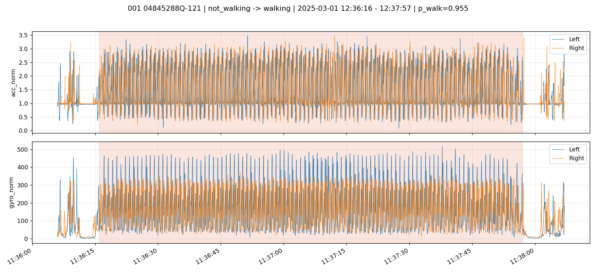
Origen: previous_dataset | Local: 2026-04-29T17:26:44.010000+02:00 - 2026-04-29T17:28:25.010000+02:00 | Ventanas: 95 | p_walk media: 0.902021
Extraccion: ok | Filas raw: 11920 | Pies: Left:5966;Right:5954
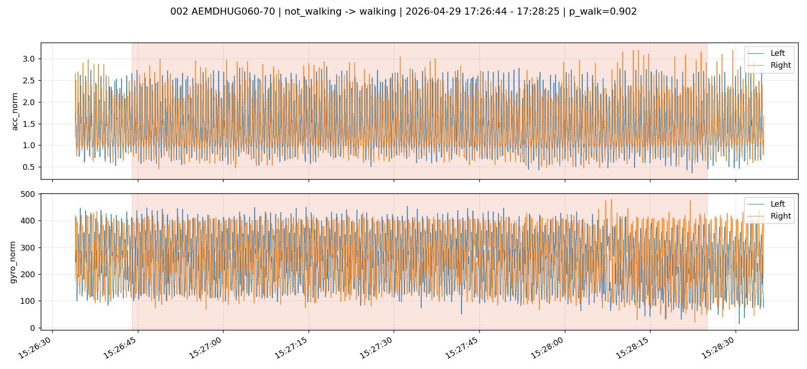
Origen: previous_dataset | Local: 2026-04-29T17:22:53.010000+02:00 - 2026-04-29T17:24:34.010000+02:00 | Ventanas: 92 | p_walk media: 0.904884
Extraccion: ok | Filas raw: 11908 | Pies: Left:5962;Right:5946
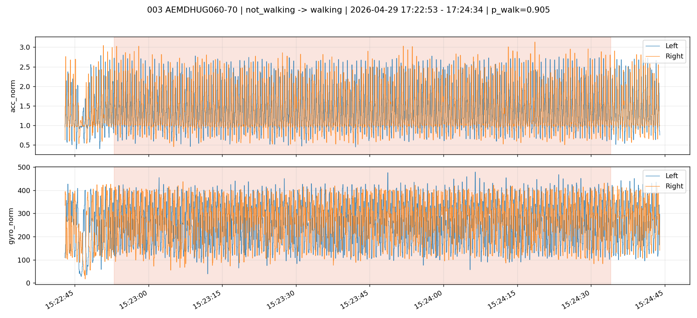
Origen: previous_dataset | Local: 2026-04-29T17:24:37.010000+02:00 - 2026-04-29T17:25:46.010000+02:00 | Ventanas: 65 | p_walk media: 0.913723
Extraccion: ok | Filas raw: 8775 | Pies: Left:4386;Right:4389
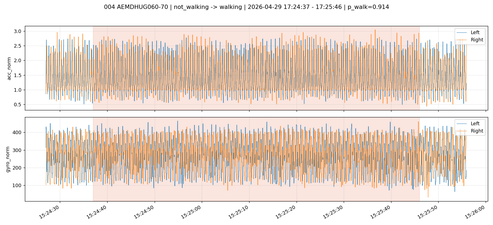
Origen: previous_dataset | Local: 2025-07-16T10:39:16.020000+02:00 - 2025-07-16T10:40:25.020000+02:00 | Ventanas: 62 | p_walk media: 0.147249
Extraccion: ok | Filas raw: 7580 | Pies: Left:3609;Right:3971
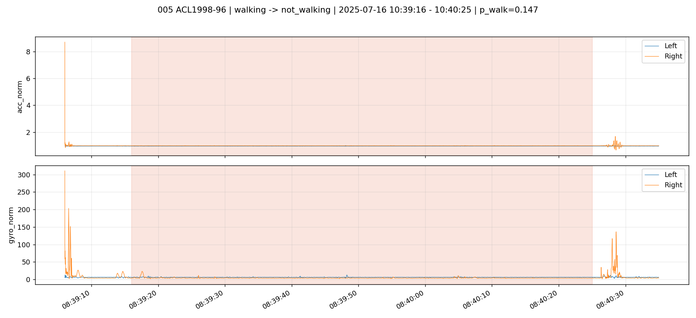
Origen: previous_dataset | Local: 2025-07-16T10:29:54.020000+02:00 - 2025-07-16T10:30:52.020000+02:00 | Ventanas: 56 | p_walk media: 0.146415
Extraccion: ok | Filas raw: 6963 | Pies: Left:3335;Right:3628
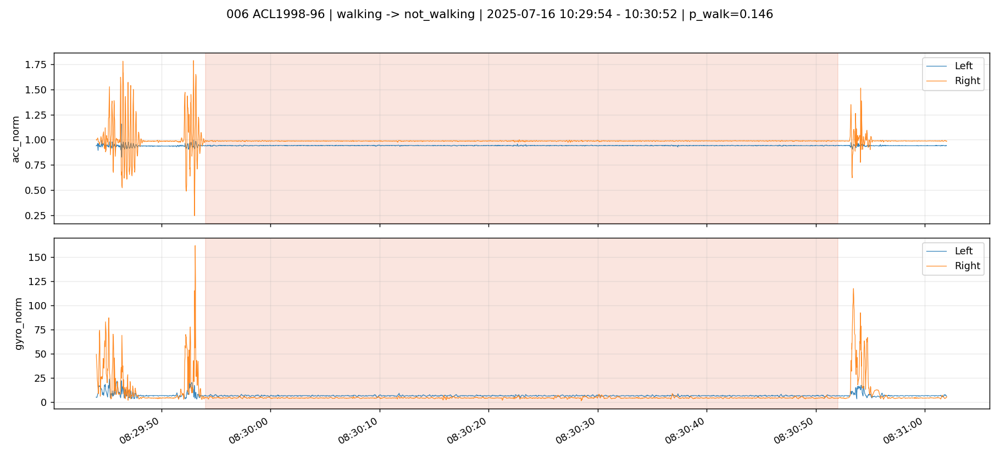
Origen: previous_dataset | Local: 2026-04-29T17:25:49.010000+02:00 - 2026-04-29T17:26:41.010000+02:00 | Ventanas: 48 | p_walk media: 0.91242
Extraccion: ok | Filas raw: 7097 | Pies: Left:3549;Right:3548
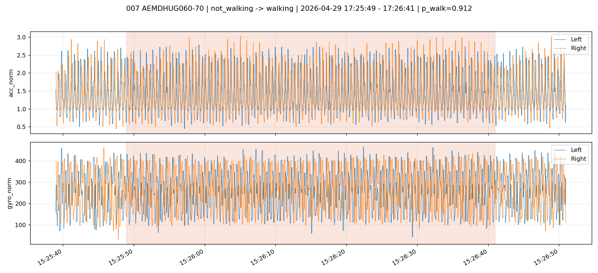
Origen: previous_dataset | Local: 2026-04-29T17:22:01.010000+02:00 - 2026-04-29T17:22:33.010000+02:00 | Ventanas: 30 | p_walk media: 0.902023
Extraccion: ok | Filas raw: 5091 | Pies: Left:2547;Right:2544
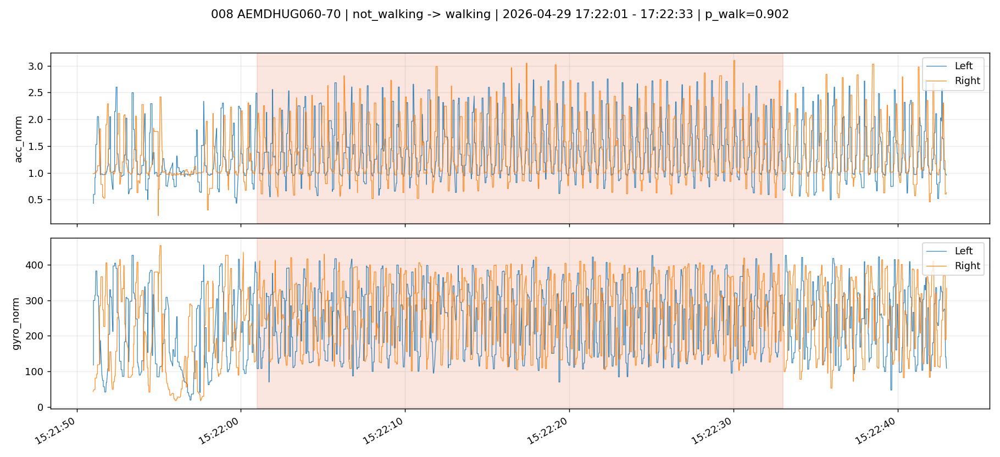
Origen: previous_dataset | Local: 2025-07-16T10:36:58.020000+02:00 - 2025-07-16T10:37:31.020000+02:00 | Ventanas: 28 | p_walk media: 0.150672
Extraccion: ok | Filas raw: 4644 | Pies: Left:2206;Right:2438
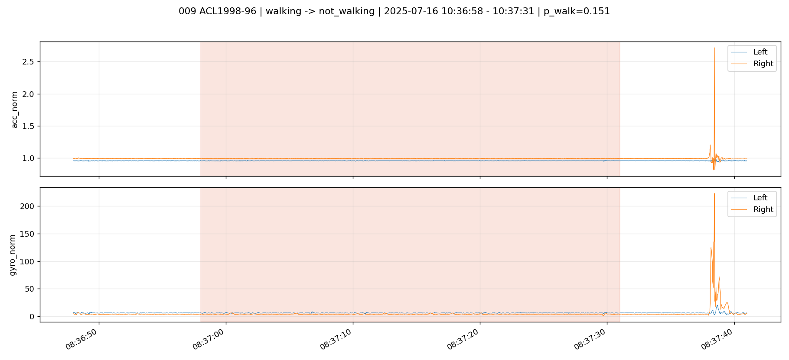
Origen: previous_dataset | Local: 2025-07-16T10:41:35.020000+02:00 - 2025-07-16T10:42:01.020000+02:00 | Ventanas: 26 | p_walk media: 0.155647
Extraccion: ok | Filas raw: 4064 | Pies: Left:1982;Right:2082
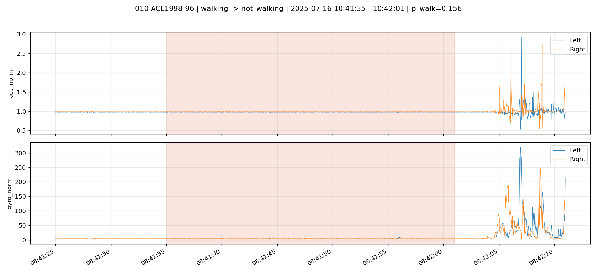
Origen: previous_dataset | Local: 2025-07-16T10:40:30.020000+02:00 - 2025-07-16T10:41:01.020000+02:00 | Ventanas: 26 | p_walk media: 0.140944
Extraccion: ok | Filas raw: 4416 | Pies: Left:2187;Right:2229
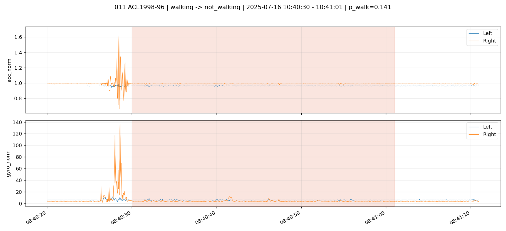
Origen: previous_dataset | Local: 2026-04-29T17:28:28.010000+02:00 - 2026-04-29T17:28:53.010000+02:00 | Ventanas: 25 | p_walk media: 0.896698
Extraccion: ok | Filas raw: 3595 | Pies: Left:1802;Right:1793
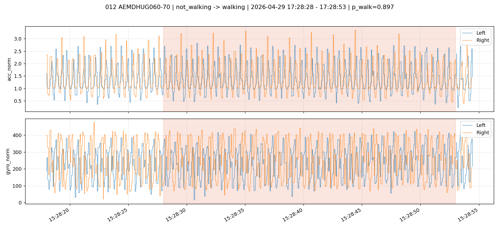
Origen: previous_dataset | Local: 2024-10-15T09:37:34.010000+02:00 - 2024-10-15T09:37:49.010000+02:00 | Ventanas: 15 | p_walk media: 0.112279
Extraccion: ok | Filas raw: 3434 | Pies: Left:1715;Right:1719
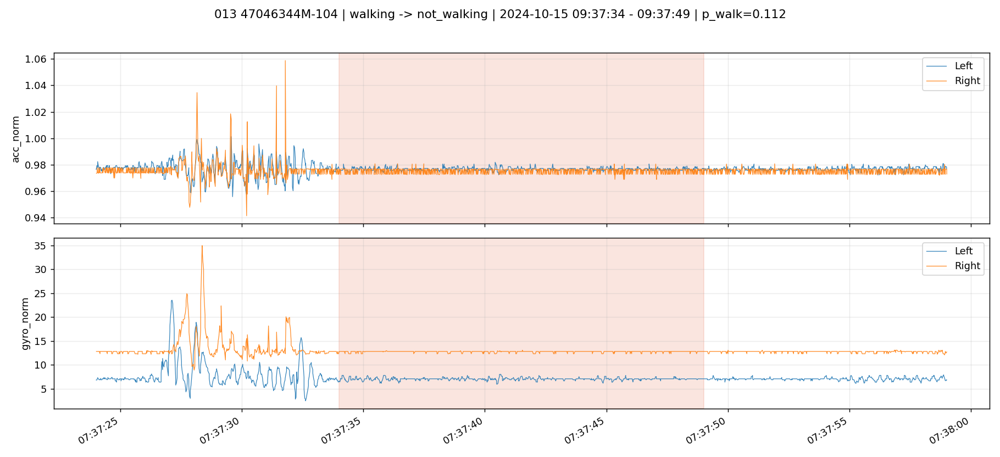
Origen: previous_dataset | Local: 2026-04-28T12:52:50+02:00 - 2026-04-28T12:53:05+02:00 | Ventanas: 13 | p_walk media: 0.878462
Extraccion: ok | Filas raw: 3453 | Pies: Left:1728;Right:1725
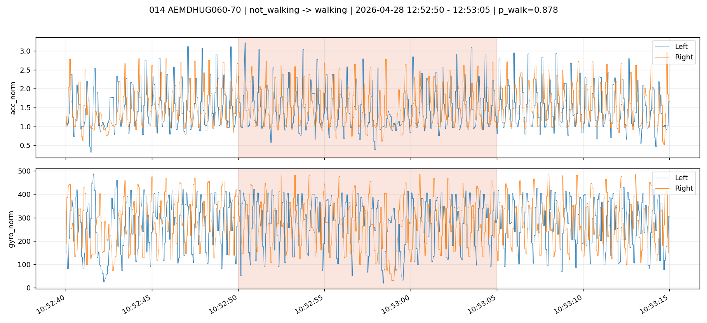
Origen: previous_dataset | Local: 2025-07-16T10:17:17.020000+02:00 - 2025-07-16T10:17:30.020000+02:00 | Ventanas: 12 | p_walk media: 0.154877
Extraccion: ok | Filas raw: 2920 | Pies: Left:1389;Right:1531
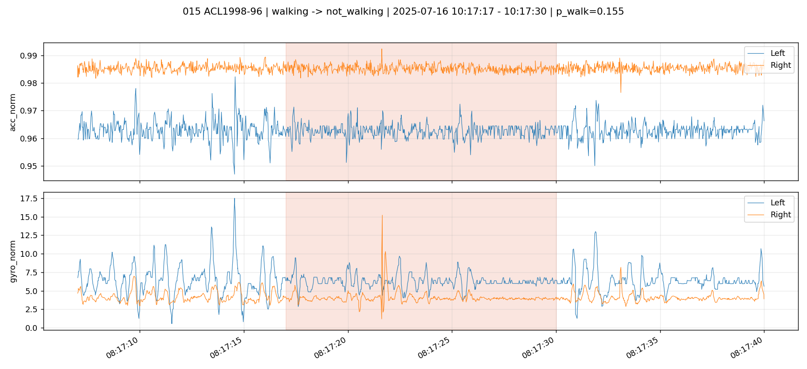
Origen: previous_dataset | Local: 2026-04-29T17:22:36.010000+02:00 - 2026-04-29T17:22:46.010000+02:00 | Ventanas: 10 | p_walk media: 0.865109
Extraccion: ok | Filas raw: 2932 | Pies: Left:1471;Right:1461
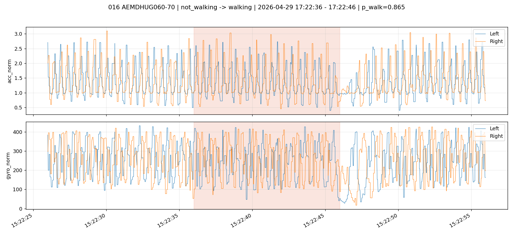
Origen: previous_dataset | Local: 2026-04-28T12:51:16+02:00 - 2026-04-28T12:51:28+02:00 | Ventanas: 10 | p_walk media: 0.862547
Extraccion: ok | Filas raw: 3173 | Pies: Left:1588;Right:1585
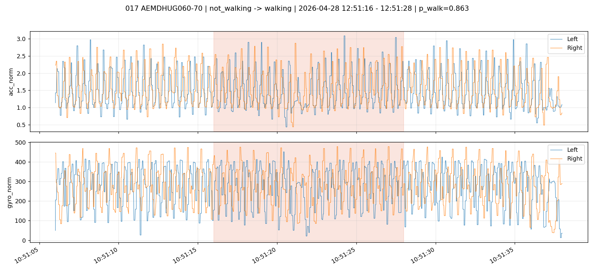
Origen: previous_dataset | Local: 2026-04-28T12:54:39+02:00 - 2026-04-28T12:54:49+02:00 | Ventanas: 9 | p_walk media: 0.897993
Extraccion: ok | Filas raw: 2965 | Pies: Left:1484;Right:1481
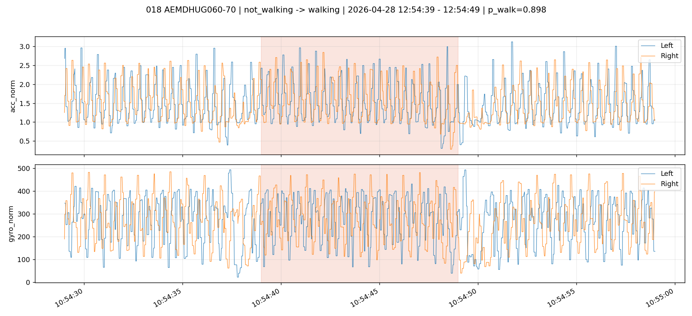
Origen: previous_dataset | Local: 2026-04-28T12:53:34+02:00 - 2026-04-28T12:53:43+02:00 | Ventanas: 9 | p_walk media: 0.877725
Extraccion: ok | Filas raw: 2855 | Pies: Left:1429;Right:1426
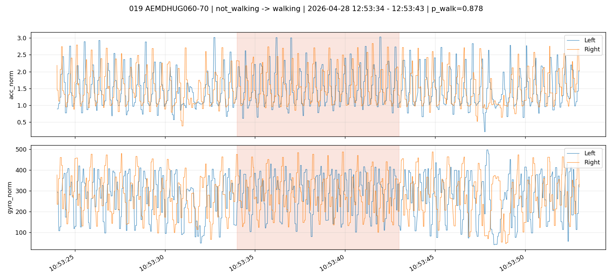
Origen: previous_dataset | Local: 2026-04-28T12:52:17+02:00 - 2026-04-28T12:52:28+02:00 | Ventanas: 9 | p_walk media: 0.874328
Extraccion: ok | Filas raw: 3067 | Pies: Left:1537;Right:1530
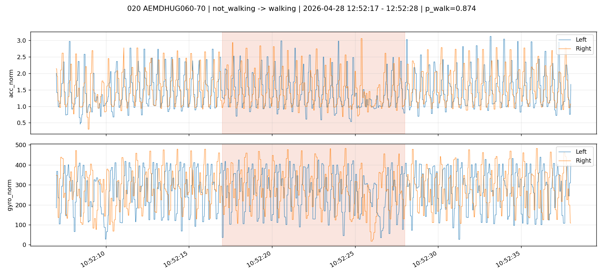
Origen: previous_dataset | Local: 2026-04-28T12:55:13+02:00 - 2026-04-28T12:55:24+02:00 | Ventanas: 9 | p_walk media: 0.865202
Extraccion: ok | Filas raw: 3062 | Pies: Left:1530;Right:1532
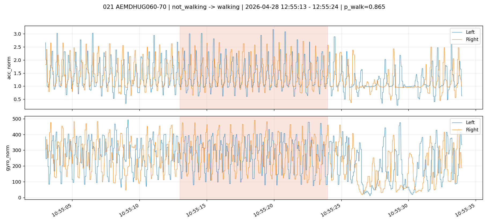
Origen: previous_dataset | Local: 2026-04-28T12:55:32+02:00 - 2026-04-28T12:55:40+02:00 | Ventanas: 9 | p_walk media: 0.833717
Extraccion: ok | Filas raw: 2777 | Pies: Left:1388;Right:1389
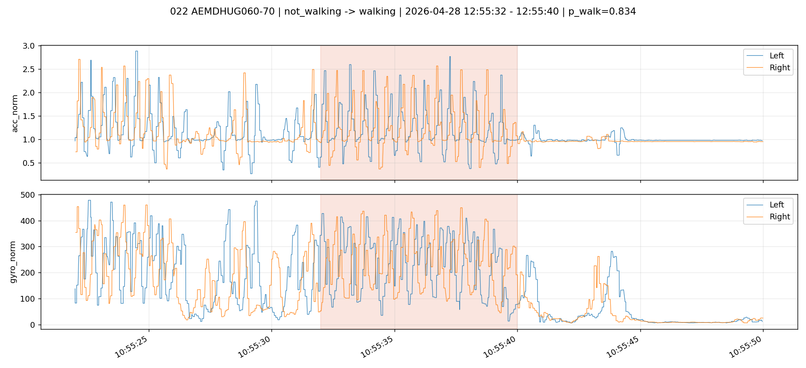
Origen: previous_dataset | Local: 2026-04-28T12:50:34+02:00 - 2026-04-28T12:50:44+02:00 | Ventanas: 8 | p_walk media: 0.872619
Extraccion: ok | Filas raw: 2967 | Pies: Left:1488;Right:1479
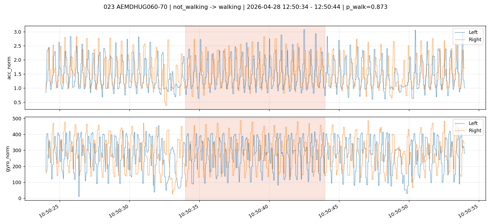
Origen: previous_dataset | Local: 2025-07-16T10:36:45.020000+02:00 - 2025-07-16T10:36:54.020000+02:00 | Ventanas: 8 | p_walk media: 0.168028
Extraccion: ok | Filas raw: 2571 | Pies: Left:1234;Right:1337
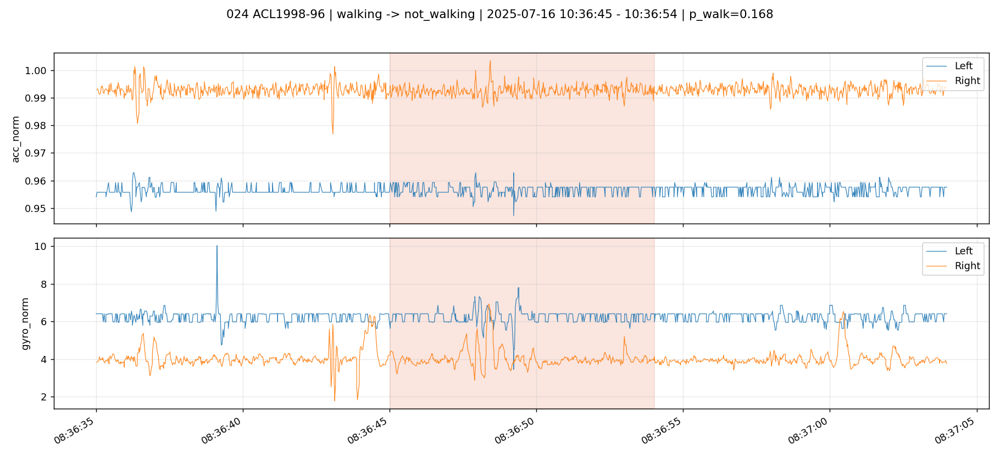
Origen: previous_dataset | Local: 2025-07-16T10:25:38.020000+02:00 - 2025-07-16T10:25:47.020000+02:00 | Ventanas: 8 | p_walk media: 0.156297
Extraccion: ok | Filas raw: 2595 | Pies: Left:1221;Right:1374
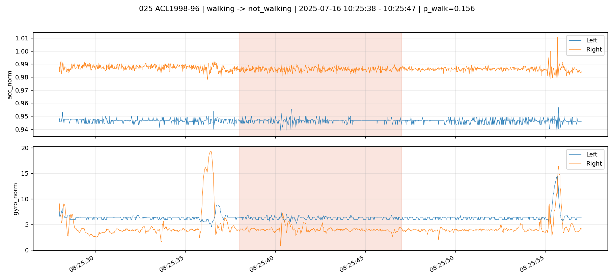
Origen: previous_dataset | Local: 2026-05-05T11:52:56.170000+02:00 - 2026-05-05T11:53:04.170000+02:00 | Ventanas: 7 | p_walk media: 0.839557
Extraccion: ok | Filas raw: 2757 | Pies: Left:1386;Right:1371
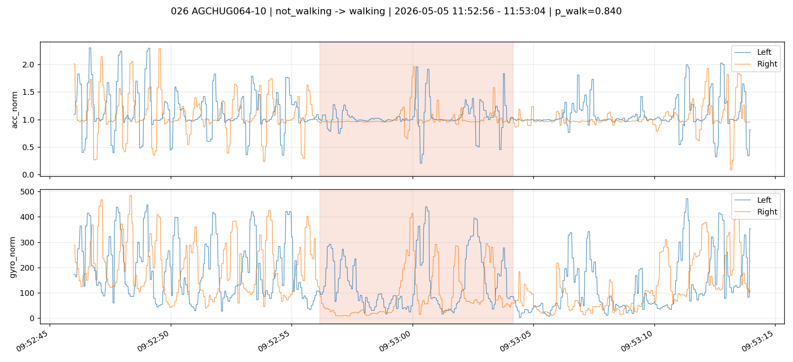
Origen: previous_dataset | Local: 2025-07-16T10:17:36.020000+02:00 - 2025-07-16T10:17:44.020000+02:00 | Ventanas: 7 | p_walk media: 0.152396
Extraccion: ok | Filas raw: 2419 | Pies: Left:1183;Right:1236
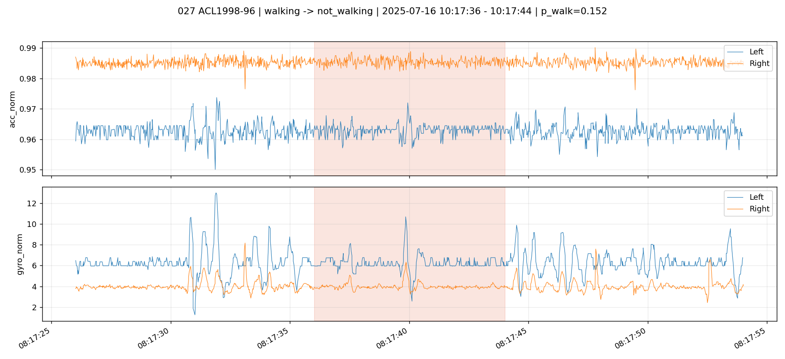
Origen: previous_dataset | Local: 2024-10-15T09:37:19.010000+02:00 - 2024-10-15T09:37:25.010000+02:00 | Ventanas: 7 | p_walk media: 0.121924
Extraccion: ok | Filas raw: 2563 | Pies: Left:1271;Right:1292
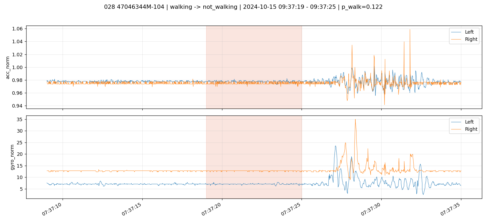
Origen: previous_dataset | Local: 2024-10-15T09:38:01.010000+02:00 - 2024-10-15T09:38:08.010000+02:00 | Ventanas: 7 | p_walk media: 0.098283
Extraccion: ok | Filas raw: 2663 | Pies: Left:1339;Right:1324
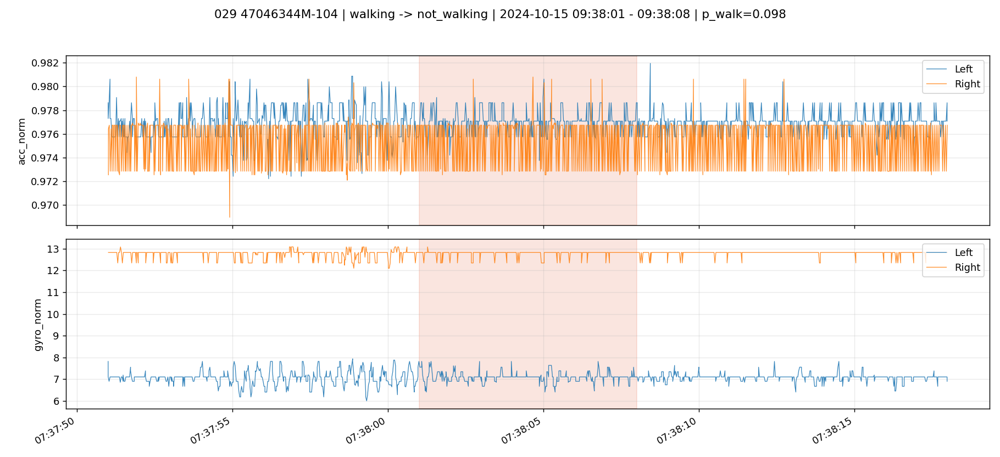
Origen: previous_dataset | Local: 2026-04-28T12:53:17+02:00 - 2026-04-28T12:53:22+02:00 | Ventanas: 6 | p_walk media: 0.897762
Extraccion: ok | Filas raw: 2474 | Pies: Left:1233;Right:1241
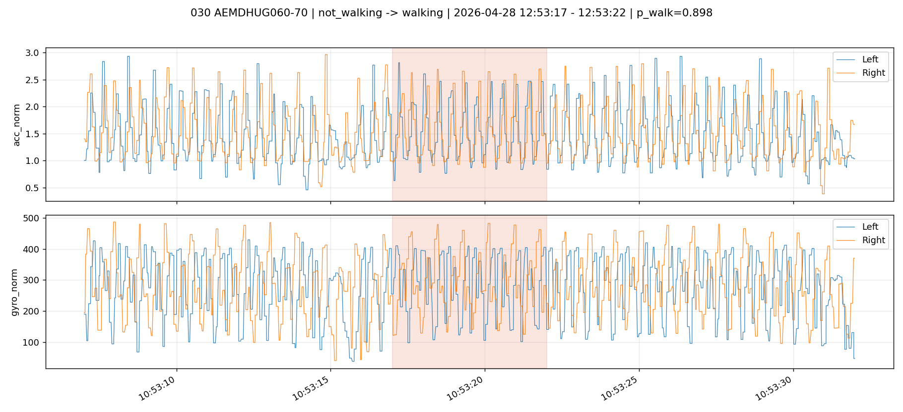
Origen: previous_dataset | Local: 2025-02-28T10:49:22.010000+01:00 - 2025-02-28T10:49:28.010000+01:00 | Ventanas: 6 | p_walk media: 0.897556
Extraccion: ok | Filas raw: 2560 | Pies: Left:1284;Right:1276
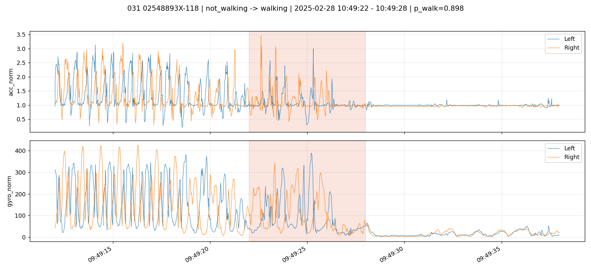
Origen: previous_dataset | Local: 2026-04-28T12:51:55+02:00 - 2026-04-28T12:52:01+02:00 | Ventanas: 6 | p_walk media: 0.894699
Extraccion: ok | Filas raw: 2584 | Pies: Left:1291;Right:1293
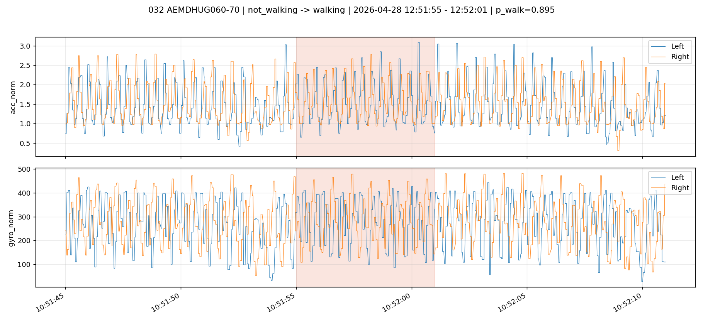
Origen: previous_dataset | Local: 2026-04-28T12:53:08+02:00 - 2026-04-28T12:53:14+02:00 | Ventanas: 6 | p_walk media: 0.887963
Extraccion: ok | Filas raw: 2578 | Pies: Left:1289;Right:1289
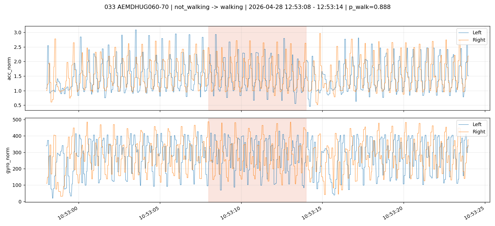
Origen: previous_dataset | Local: 2026-04-28T12:51:39+02:00 - 2026-04-28T12:51:45+02:00 | Ventanas: 6 | p_walk media: 0.87621
Extraccion: ok | Filas raw: 2559 | Pies: Left:1281;Right:1278
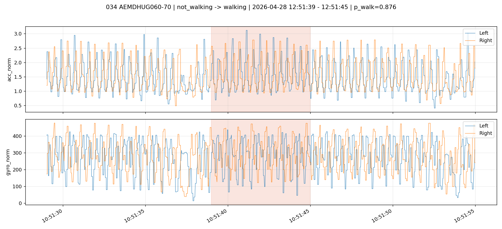
Origen: previous_dataset | Local: 2026-04-28T12:50:47+02:00 - 2026-04-28T12:50:53+02:00 | Ventanas: 6 | p_walk media: 0.872691
Extraccion: ok | Filas raw: 2574 | Pies: Left:1286;Right:1288
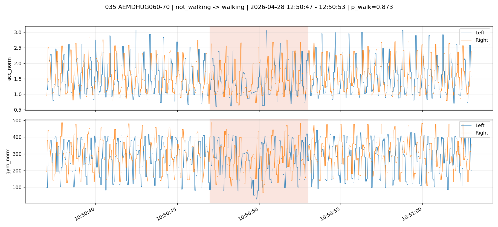
Origen: previous_dataset | Local: 2026-05-05T11:52:30.170000+02:00 - 2026-05-05T11:52:36.170000+02:00 | Ventanas: 6 | p_walk media: 0.864011
Extraccion: ok | Filas raw: 2568 | Pies: Left:1288;Right:1280
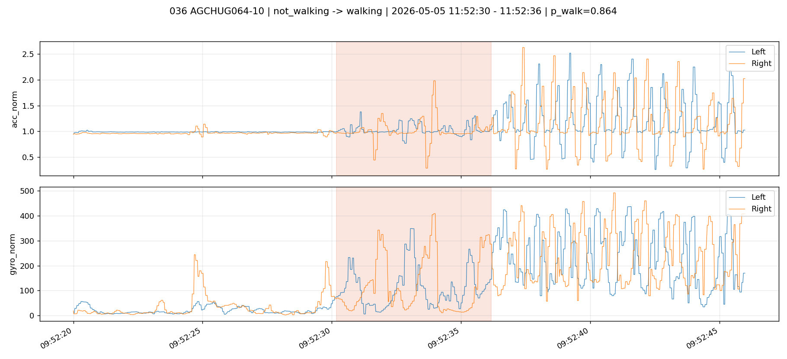
Origen: previous_dataset | Local: 2025-07-16T10:17:48.020000+02:00 - 2025-07-16T10:17:54.020000+02:00 | Ventanas: 6 | p_walk media: 0.158101
Extraccion: ok | Filas raw: 2234 | Pies: Left:1153;Right:1081
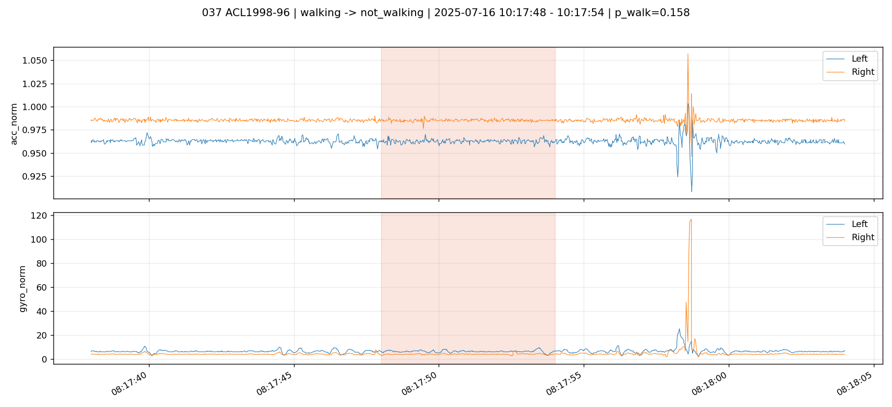
Origen: previous_dataset | Local: 2025-07-16T10:36:35.020000+02:00 - 2025-07-16T10:36:42.020000+02:00 | Ventanas: 6 | p_walk media: 0.15742
Extraccion: ok | Filas raw: 2364 | Pies: Left:1133;Right:1231
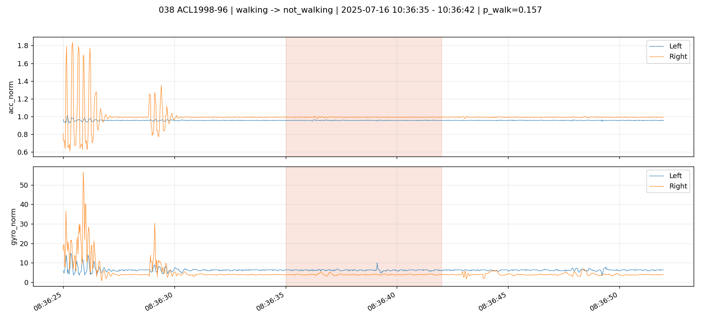
Origen: previous_dataset | Local: 2024-10-15T09:37:52.010000+02:00 - 2024-10-15T09:37:58.010000+02:00 | Ventanas: 6 | p_walk media: 0.109346
Extraccion: ok | Filas raw: 2555 | Pies: Left:1285;Right:1270
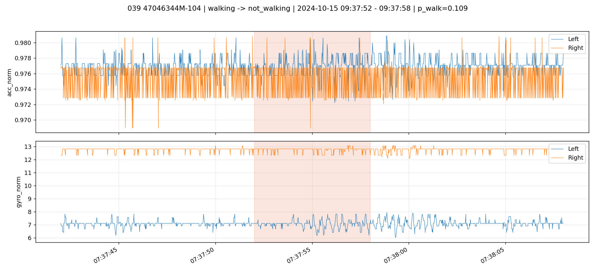
Origen: previous_dataset | Local: 2026-04-28T12:53:25+02:00 - 2026-04-28T12:53:29+02:00 | Ventanas: 5 | p_walk media: 0.88443
Extraccion: ok | Filas raw: 2363 | Pies: Left:1180;Right:1183
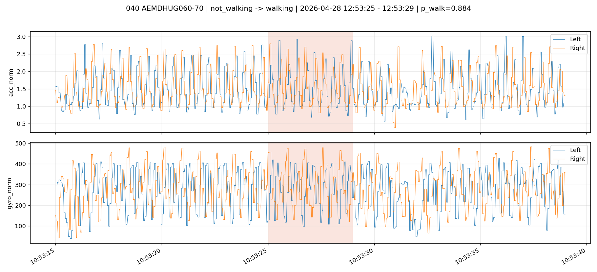
Origen: previous_dataset | Local: 2025-02-28T10:48:45.010000+01:00 - 2025-02-28T10:48:50.010000+01:00 | Ventanas: 5 | p_walk media: 0.860492
Extraccion: ok | Filas raw: 2426 | Pies: Left:1217;Right:1209
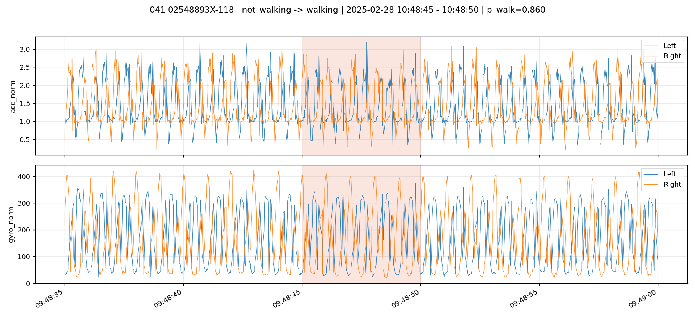
Origen: previous_dataset | Local: 2025-07-16T10:41:08.020000+02:00 - 2025-07-16T10:41:13.020000+02:00 | Ventanas: 5 | p_walk media: 0.157934
Extraccion: ok | Filas raw: 2198 | Pies: Left:1061;Right:1137
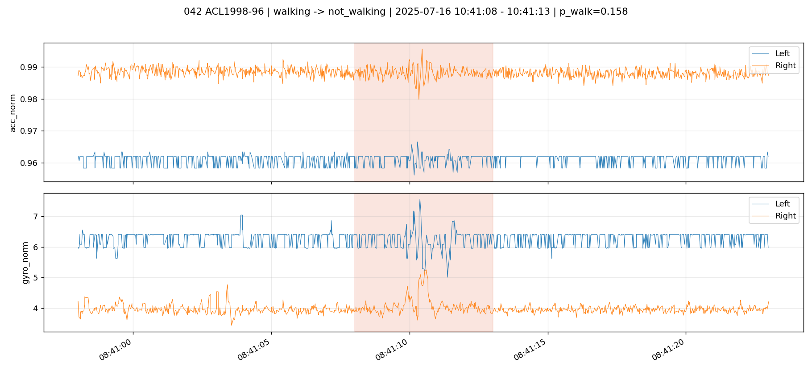
Origen: previous_dataset | Local: 2026-04-28T12:55:00+02:00 - 2026-04-28T12:55:03+02:00 | Ventanas: 4 | p_walk media: 0.887467
Extraccion: ok | Filas raw: 2281 | Pies: Left:1141;Right:1140
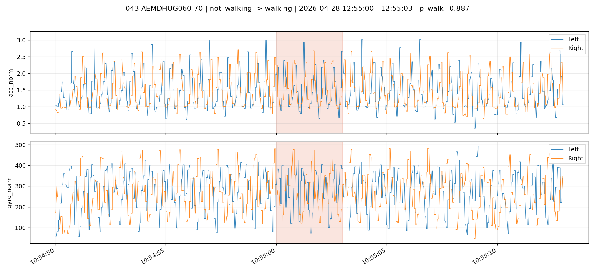
Origen: previous_dataset | Local: 2026-04-28T12:55:06+02:00 - 2026-04-28T12:55:09+02:00 | Ventanas: 4 | p_walk media: 0.873755
Extraccion: ok | Filas raw: 2273 | Pies: Left:1134;Right:1139
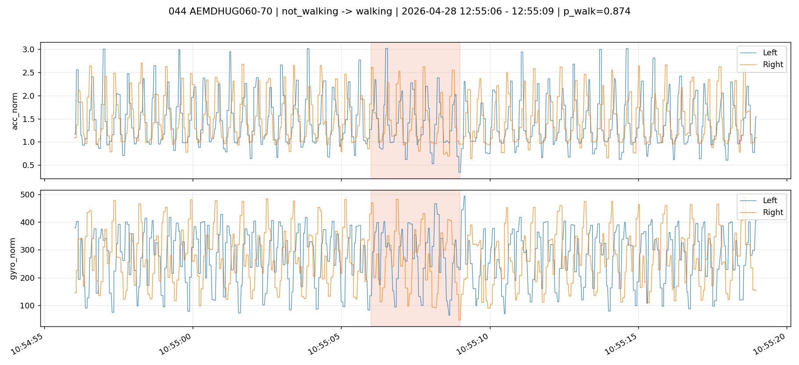
Origen: previous_dataset | Local: 2026-04-28T12:50:56+02:00 - 2026-04-28T12:51:00+02:00 | Ventanas: 4 | p_walk media: 0.871041
Extraccion: ok | Filas raw: 2369 | Pies: Left:1183;Right:1186
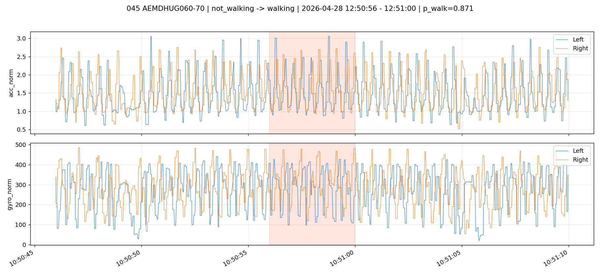
Origen: previous_dataset | Local: 2026-04-28T12:52:09+02:00 - 2026-04-28T12:52:13+02:00 | Ventanas: 4 | p_walk media: 0.865067
Extraccion: ok | Filas raw: 2368 | Pies: Left:1182;Right:1186
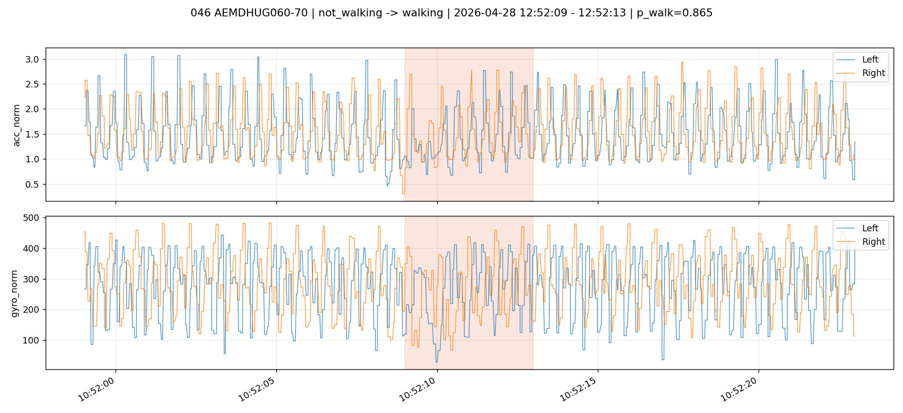
Origen: previous_dataset | Local: 2026-05-05T11:53:08.170000+02:00 - 2026-05-05T11:53:11.170000+02:00 | Ventanas: 4 | p_walk media: 0.864475
Extraccion: ok | Filas raw: 2264 | Pies: Left:1137;Right:1127
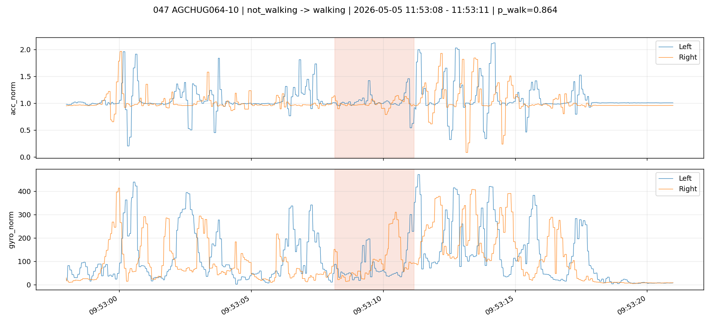
Origen: previous_dataset | Local: 2026-04-28T12:54:53+02:00 - 2026-04-28T12:54:57+02:00 | Ventanas: 4 | p_walk media: 0.861173
Extraccion: ok | Filas raw: 2379 | Pies: Left:1196;Right:1183
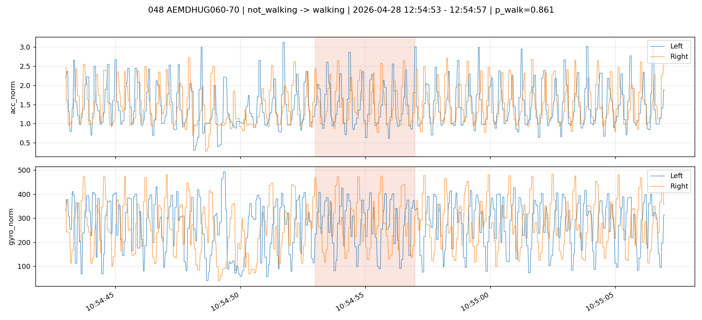
Origen: previous_dataset | Local: 2026-05-05T11:53:14.170000+02:00 - 2026-05-05T11:53:17.170000+02:00 | Ventanas: 4 | p_walk media: 0.823351
Extraccion: ok | Filas raw: 2264 | Pies: Left:1134;Right:1130
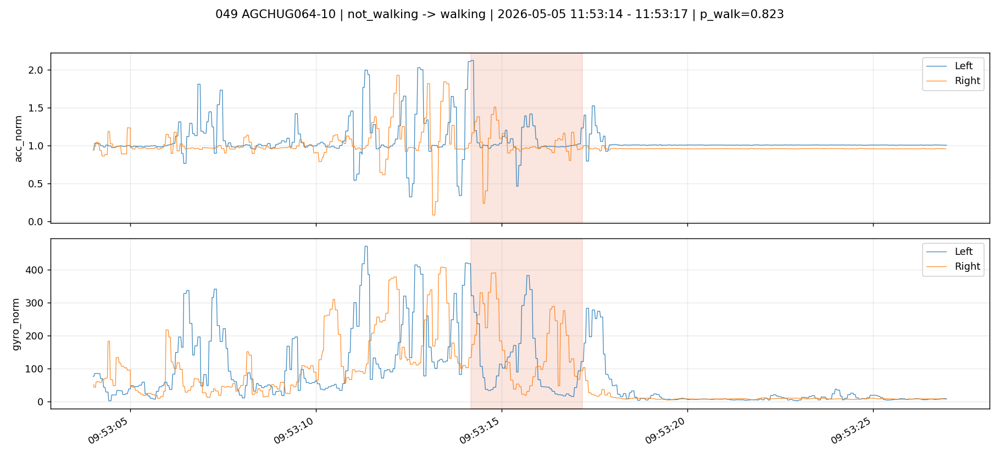
Origen: previous_dataset | Local: 2025-07-16T10:25:52.020000+02:00 - 2025-07-16T10:25:55.020000+02:00 | Ventanas: 4 | p_walk media: 0.17583
Extraccion: ok | Filas raw: 2009 | Pies: Left:981;Right:1028
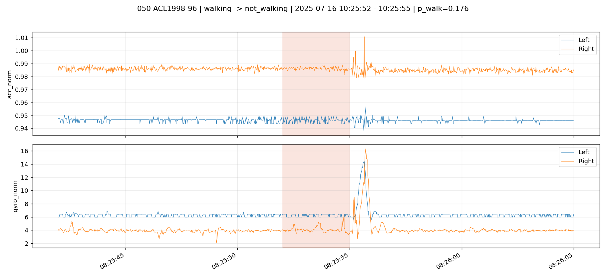
Origen: previous_dataset | Local: 2025-07-16T10:25:29.020000+02:00 - 2025-07-16T10:25:33.020000+02:00 | Ventanas: 4 | p_walk media: 0.175376
Extraccion: ok | Filas raw: 2183 | Pies: Left:1007;Right:1176
Origen: previous_dataset | Local: 2025-07-16T10:17:01.020000+02:00 - 2025-07-16T10:17:04.020000+02:00 | Ventanas: 4 | p_walk media: 0.162491
Extraccion: ok | Filas raw: 2025 | Pies: Left:979;Right:1046
Origen: previous_dataset | Local: 2026-04-28T12:52:37+02:00 - 2026-04-28T12:52:39+02:00 | Ventanas: 3 | p_walk media: 0.905604
Extraccion: ok | Filas raw: 2177 | Pies: Left:1086;Right:1091
Origen: previous_dataset | Local: 2026-04-28T12:51:11+02:00 - 2026-04-28T12:51:13+02:00 | Ventanas: 3 | p_walk media: 0.903956
Extraccion: ok | Filas raw: 2180 | Pies: Left:1095;Right:1085
Origen: previous_dataset | Local: 2026-04-28T12:52:45+02:00 - 2026-04-28T12:52:47+02:00 | Ventanas: 3 | p_walk media: 0.885732
Extraccion: ok | Filas raw: 2161 | Pies: Left:1077;Right:1084
Origen: previous_dataset | Local: 2026-04-28T12:51:06+02:00 - 2026-04-28T12:51:08+02:00 | Ventanas: 3 | p_walk media: 0.878107
Extraccion: ok | Filas raw: 2170 | Pies: Left:1089;Right:1081
Origen: previous_dataset | Local: 2026-04-28T12:50:23+02:00 - 2026-04-28T12:50:25+02:00 | Ventanas: 3 | p_walk media: 0.874572
Extraccion: ok | Filas raw: 2169 | Pies: Left:1083;Right:1086
Origen: previous_dataset | Local: 2026-04-28T12:51:31+02:00 - 2026-04-28T12:51:33+02:00 | Ventanas: 3 | p_walk media: 0.866431
Extraccion: ok | Filas raw: 2165 | Pies: Left:1077;Right:1088
Origen: previous_dataset | Local: 2025-02-28T10:48:39.010000+01:00 - 2025-02-28T10:48:41.010000+01:00 | Ventanas: 3 | p_walk media: 0.861082
Extraccion: ok | Filas raw: 2135 | Pies: Left:1066;Right:1069
Origen: previous_dataset | Local: 2025-02-28T10:49:08.010000+01:00 - 2025-02-28T10:49:10.010000+01:00 | Ventanas: 3 | p_walk media: 0.850592
Extraccion: ok | Filas raw: 2144 | Pies: Left:1071;Right:1073
Origen: previous_dataset | Local: 2025-02-28T10:48:32.010000+01:00 - 2025-02-28T10:48:34.010000+01:00 | Ventanas: 3 | p_walk media: 0.850302
Extraccion: ok | Filas raw: 2153 | Pies: Left:1072;Right:1081
Origen: previous_dataset | Local: 2026-05-05T11:52:50.170000+02:00 - 2026-05-05T11:52:53.170000+02:00 | Ventanas: 3 | p_walk media: 0.848933
Extraccion: ok | Filas raw: 2265 | Pies: Left:1135;Right:1130
Origen: previous_dataset | Local: 2025-07-16T10:53:00.020000+02:00 - 2025-07-16T10:53:02.020000+02:00 | Ventanas: 3 | p_walk media: 0.189594
Extraccion: ok | Filas raw: 1903 | Pies: Left:945;Right:958
Origen: previous_dataset | Local: 2025-07-16T10:52:41.020000+02:00 - 2025-07-16T10:52:44.020000+02:00 | Ventanas: 3 | p_walk media: 0.166274
Extraccion: ok | Filas raw: 2087 | Pies: Left:946;Right:1141
Origen: previous_dataset | Local: 2026-04-28T12:52:32+02:00 - 2026-04-28T12:52:33+02:00 | Ventanas: 2 | p_walk media: 0.906335
Extraccion: ok | Filas raw: 2080 | Pies: Left:1041;Right:1039
Origen: previous_dataset | Local: 2026-04-28T12:51:49+02:00 - 2026-04-28T12:51:50+02:00 | Ventanas: 2 | p_walk media: 0.888291
Extraccion: ok | Filas raw: 2074 | Pies: Left:1042;Right:1032
Origen: previous_dataset | Local: 2026-04-29T17:22:49.010000+02:00 - 2026-04-29T17:22:50.010000+02:00 | Ventanas: 2 | p_walk media: 0.881478
Extraccion: ok | Filas raw: 2069 | Pies: Left:1041;Right:1028
Origen: previous_dataset | Local: 2025-02-28T10:48:08.010000+01:00 - 2025-02-28T10:48:09.010000+01:00 | Ventanas: 2 | p_walk media: 0.862541
Extraccion: ok | Filas raw: 2064 | Pies: Left:1035;Right:1029
Origen: previous_dataset | Local: 2026-04-28T12:50:09+02:00 - 2026-04-28T12:50:10+02:00 | Ventanas: 2 | p_walk media: 0.860863
Extraccion: ok | Filas raw: 2091 | Pies: Left:1046;Right:1045
Origen: previous_dataset | Local: 2026-05-05T11:52:45.170000+02:00 - 2026-05-05T11:52:46.170000+02:00 | Ventanas: 2 | p_walk media: 0.834006
Extraccion: ok | Filas raw: 2081 | Pies: Left:1041;Right:1040
Origen: previous_dataset | Local: 2025-02-28T10:48:53.010000+01:00 - 2025-02-28T10:48:54.010000+01:00 | Ventanas: 2 | p_walk media: 0.81809
Extraccion: ok | Filas raw: 2037 | Pies: Left:1024;Right:1013
Origen: previous_dataset | Local: 2026-05-05T11:52:40.170000+02:00 - 2026-05-05T11:52:41.170000+02:00 | Ventanas: 2 | p_walk media: 0.816444
Extraccion: ok | Filas raw: 2082 | Pies: Left:1043;Right:1039
Origen: previous_dataset | Local: 2025-07-16T10:52:51.020000+02:00 - 2025-07-16T10:52:52.020000+02:00 | Ventanas: 2 | p_walk media: 0.195571
Extraccion: ok | Filas raw: 1847 | Pies: Left:884;Right:963
Origen: previous_dataset | Local: 2025-07-16T10:36:31.020000+02:00 - 2025-07-16T10:36:32.020000+02:00 | Ventanas: 2 | p_walk media: 0.187163
Extraccion: ok | Filas raw: 1817 | Pies: Left:863;Right:954
Origen: previous_dataset | Local: 2025-07-16T10:26:10.020000+02:00 - 2025-07-16T10:26:11.020000+02:00 | Ventanas: 2 | p_walk media: 0.181597
Extraccion: ok | Filas raw: 1892 | Pies: Left:888;Right:1004
Origen: previous_dataset | Local: 2025-07-16T10:52:55.020000+02:00 - 2025-07-16T10:52:57.020000+02:00 | Ventanas: 2 | p_walk media: 0.178723
Extraccion: ok | Filas raw: 1917 | Pies: Left:947;Right:970
Origen: previous_dataset | Local: 2025-07-16T10:41:19.020000+02:00 - 2025-07-16T10:41:20.020000+02:00 | Ventanas: 2 | p_walk media: 0.177791
Extraccion: ok | Filas raw: 1862 | Pies: Left:895;Right:967
Origen: previous_dataset | Local: 2025-07-16T10:52:34.020000+02:00 - 2025-07-16T10:52:35.020000+02:00 | Ventanas: 2 | p_walk media: 0.16289
Extraccion: ok | Filas raw: 1906 | Pies: Left:882;Right:1024
Origen: previous_dataset | Local: 2025-07-16T10:41:04.020000+02:00 - 2025-07-16T10:41:05.020000+02:00 | Ventanas: 2 | p_walk media: 0.160545
Extraccion: ok | Filas raw: 1819 | Pies: Left:898;Right:921
Origen: previous_dataset | Local: 2025-07-16T10:52:26.020000+02:00 - 2025-07-16T10:52:27.020000+02:00 | Ventanas: 2 | p_walk media: 0.156672
Extraccion: ok | Filas raw: 1868 | Pies: Left:924;Right:944
Origen: previous_dataset | Local: 2025-02-28T10:48:16.010000+01:00 - 2025-02-28T10:48:16.010000+01:00 | Ventanas: 1 | p_walk media: 0.907237
Extraccion: ok | Filas raw: 1977 | Pies: Left:990;Right:987
Origen: previous_dataset | Local: 2026-04-28T12:50:31+02:00 - 2026-04-28T12:50:31+02:00 | Ventanas: 1 | p_walk media: 0.89326
Extraccion: ok | Filas raw: 1970 | Pies: Left:990;Right:980
Origen: previous_dataset | Local: 2026-04-28T12:50:28+02:00 - 2026-04-28T12:50:28+02:00 | Ventanas: 1 | p_walk media: 0.889659
Extraccion: ok | Filas raw: 1968 | Pies: Left:987;Right:981
Origen: previous_dataset | Local: 2026-04-28T12:52:06+02:00 - 2026-04-28T12:52:06+02:00 | Ventanas: 1 | p_walk media: 0.871473
Extraccion: ok | Filas raw: 1979 | Pies: Left:986;Right:993
Origen: previous_dataset | Local: 2025-02-28T10:49:19.010000+01:00 - 2025-02-28T10:49:19.010000+01:00 | Ventanas: 1 | p_walk media: 0.850882
Extraccion: ok | Filas raw: 1958 | Pies: Left:981;Right:977
Origen: previous_dataset | Local: 2026-04-28T12:50:18+02:00 - 2026-04-28T12:50:18+02:00 | Ventanas: 1 | p_walk media: 0.808069
Extraccion: ok | Filas raw: 1976 | Pies: Left:985;Right:991
Origen: previous_dataset | Local: 2025-02-28T10:48:24.010000+01:00 - 2025-02-28T10:48:24.010000+01:00 | Ventanas: 1 | p_walk media: 0.795194
Extraccion: ok | Filas raw: 1979 | Pies: Left:985;Right:994
Origen: previous_dataset | Local: 2024-10-15T09:37:31.010000+02:00 - 2024-10-15T09:37:31.010000+02:00 | Ventanas: 1 | p_walk media: 0.215354
Extraccion: ok | Filas raw: 1970 | Pies: Left:977;Right:993
Origen: previous_dataset | Local: 2025-07-16T10:39:09.020000+02:00 - 2025-07-16T10:39:09.020000+02:00 | Ventanas: 1 | p_walk media: 0.212548
Extraccion: ok | Filas raw: 1794 | Pies: Left:845;Right:949
Origen: previous_dataset | Local: 2025-07-16T10:42:04.020000+02:00 - 2025-07-16T10:42:04.020000+02:00 | Ventanas: 1 | p_walk media: 0.205927
Extraccion: ok | Filas raw: 1736 | Pies: Left:840;Right:896
Origen: previous_dataset | Local: 2025-07-16T10:26:18.020000+02:00 - 2025-07-16T10:26:18.020000+02:00 | Ventanas: 1 | p_walk media: 0.195448
Extraccion: ok | Filas raw: 1838 | Pies: Left:876;Right:962
Origen: previous_dataset | Local: 2025-07-16T10:39:12.020000+02:00 - 2025-07-16T10:39:12.020000+02:00 | Ventanas: 1 | p_walk media: 0.19027
Extraccion: ok | Filas raw: 1787 | Pies: Left:836;Right:951
Origen: previous_dataset | Local: 2025-07-16T10:41:25.020000+02:00 - 2025-07-16T10:41:25.020000+02:00 | Ventanas: 1 | p_walk media: 0.18546
Extraccion: ok | Filas raw: 1776 | Pies: Left:854;Right:922
Origen: previous_dataset | Local: 2025-07-16T10:17:09.020000+02:00 - 2025-07-16T10:17:09.020000+02:00 | Ventanas: 1 | p_walk media: 0.172793
Extraccion: ok | Filas raw: 1751 | Pies: Left:856;Right:895
Origen: previous_dataset | Local: 2025-07-16T10:53:10.020000+02:00 - 2025-07-16T10:53:10.020000+02:00 | Ventanas: 1 | p_walk media: 0.169545
Extraccion: ok | Filas raw: 1756 | Pies: Left:838;Right:918
Origen: previous_dataset | Local: 2025-07-16T10:26:22.020000+02:00 - 2025-07-16T10:26:22.020000+02:00 | Ventanas: 1 | p_walk media: 0.166136
Extraccion: ok | Filas raw: 1823 | Pies: Left:887;Right:936
Origen: previous_dataset | Local: 2025-07-16T10:53:19.020000+02:00 - 2025-07-16T10:53:19.020000+02:00 | Ventanas: 1 | p_walk media: 0.124943
Extraccion: ok | Filas raw: 1805 | Pies: Left:809;Right:996
Origen: previous_dataset | Local: 2025-07-16T10:17:33.020000+02:00 - 2025-07-16T10:17:33.020000+02:00 | Ventanas: 1 | p_walk media: 0.122298
Extraccion: ok | Filas raw: 1757 | Pies: Left:816;Right:941
Origen: previous_dataset | Local: 2025-07-16T10:41:29.020000+02:00 - 2025-07-16T10:41:29.020000+02:00 | Ventanas: 1 | p_walk media: 0.083865
Extraccion: ok | Filas raw: 1781 | Pies: Left:865;Right:916